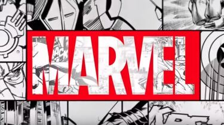
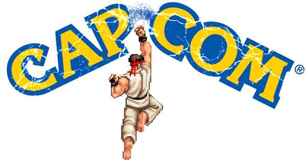

Marvel
For Marvel we have quite a few of the more known representatives from the comics, as well as a few you may not know.
- Captain America
- Deadpool
- Doctor Doom
- Doctor Strange
- Dormammu
- Ghost Rider
- Hawkeye
- Hulk
- Iron Fist
- Iron Man
- Magneto
- M.O.D.O.K
- Nova
- Phoenix
- Rocket Raccoon
- Sentinel
- She-Hulk
- Shuma-Gorath
- Spider-Man
- Storm
- Super-Skrull
- Taskmaster
- Thor
- Wolverine
- X-23
Capcom
For Capcom we reach each end of the spectrum, from Dante in Devil May Cry, to Arthur from Ghosts'n Goblins .
- Akuma
- Amaterasu
- Arthur
- C.Viper
- Chris
- Chun-Li
- Dante
- Felicia
- Firebrand
- Frank West
- Haggar
- Hsien Ko
- Jill
- Morrigan
- Nemesis
- Phoenix Wright
- Ryu
- Spencer
- Strider
- Trish
- Tron Bonne
- Vergil
- Viewtiful Joe
- Wesker
- Zero
Marvel Character Information

- Captain America
-
"I've fought in more wars than you can count!"
—Cap's prematch quote
Captain America's gameplay is a defensive rushdown character. With great mobility and priority, Captain America can easily interrupt and frustrate other character's strategies. Despite his lack of versatility in all fields, what the Captain is well versatile in is his small and effective moveset, making him great to pick up for new players who can make use of anything in his limited skillset compared to others. His moveset includes a mix of quick and long normal attacks and specials that allow him to defend against a wide range of attacks, making him very easy to use, and is very simplistic in his brute force.
He can zone opponents decently using his Shield Slash to keep a safe distance and use it as a advantage to get in close combat, where he can unleash fast combos. His damage output is also packs great results from having some simple standard-type advanced combos. His Charging Star is one of the few anti-projectile attacks in the game, and could block ANY projectile be it a multitude of them or even beams, including Hyper Combos. Though sadly, the move was somewhat too slow to be of any quick use. MVC3 fixes this problem by not only making it have faster startup, but it had much more plowing power; though at a cost, the move would end sooner and the Captain would lose his cover, though its speed in reaching its target mitigated that fact. Also, the Captain's priority is more so decent only with is shield on; without his shield (via losing it from a Shield Slash missing and the Cap moving away from it), his normals are altered, but possibly easier to punish. This tends to make his Shield Slash a risky move in itself.
His gameplay was further expanded/refined in MvC3. Though his Shield Slash in past games was risky, now in MVC3 it can devestate in several combos. He possessed a difficult infinite with his Hard version Shield Slash in MvC3, but it was removed in the vanilla version patches and UMvC3. Also, his walking speed can hinder some at times, making him a bit difficult for speedster-type users to manage, but he packs a good dash. He also lacks grounded mixups, making it difficult for him to get in through defensive foes, though his Backflip move is a viable crossup tool in his possession, along with his jp. HP/S.
Unlike most characters in past vs. Capcom games, the Captain is one of the few who can double jump.
In UMVC3, Captain America gains a good amount of buffs, such as regaining his double jump, and readding his OTG Light version Shield Slash. However, his L Shield Slash can now OTG via TvC/MVC3 standards unlike in past games, making it a great move for extending combos unlike before. His double jump and Shield Slash OTG now give way for the Captain's combos to wreak more havoc on his enemies. Even his Charging Star thanks to its retweaked knockdown makes it a better combo tool than before. - Deadpool
- "You were recording that, weren't you player? No? Heh heh...WHAT DO YOU MEAN YOU WEREN'T RECORDING THAT?!"
—Deadpool breaking the 4th wall upon victory.
Deadpool uses two swords and two fully-automatic pistols in combat. He is a relatively fast character with good ranged and close quarters attacks. His specials include firing his guns rapidly at the opponent, and doing a series of slashes targeting the oppenent. His support attacts include jumping in and firing a full-auto burst at the opponent. Also, he even copied one of Ryu's attacks, Shouryuuken, which he in fact demonstrated in one of his comics.
Deadpool can also use a teleporter, but it malfunctions after every third use, inflicting some damage on Deadpool while knocking him back. However, Deadpool's teleport puts him in a more advantageous situation compared to other characters with teleport moves, as he can instantly attack after teleporting rather than idling in a vulnerable post-teleport animation for vital miliseconds. The explosion from the teleport malfunction can also knock back and damage opponents(inflicting twice as much damage on the opponent as on Deadpool) if they are nearby, enabling the teleport malfunction to serve as an extra attack if a player is clever enough to exploit it.
In UMVC3, most of Deadpool's combo capabilities have been extended, as he can now cancel into his Teleport from his special moves, and his throws now can open up more combos as well. However, in the vanilla version, his Hard version Ninja Gift had a loop where Deadpool in the corner would cancel his launcher into a super jump Trigger Happy->H Ninja Gift, and repeat. This loop has been dealt with in the Ultimate version. - Doctor Doom
- "I do as I choose, and I answer to no one! —Dr. Doom
With a wide variety of projectiles, Dr. Doom is a very defense-oriented character. His gameplay consists of constant poking with projectiles, putting his opponents off balance so he can attack them in close range. He's a great assist character, as all of his assists can be easily chained with other characters' attacks and projectiles. - Doctor Strange
- "I am the Sorcerer Supreme after all."
—Dr. Strange
Dr. Strange is a large, slow character, but has many specials and features that help him move around the screen. He can normal cancel his wave dash, and has multiple tracking teleports. Dr. Strange's main strength is his zoning versatility, and all of his Hyper attacks have very good range. - Dormammu
- "Resistance will avail you nothing! I lay claim to all that I see!"
—Dormammu's victory quote.
Dormammu has a very versatile arsenal of projectiles; being the MvC3 equivalent of Blackheart. He can combine his two Empower Spells (Power of the Creator and Power of the Destructor) to make different specials which have different properties (multi-hit, OTG, wall-bounce, etc). He lacks mobility and is a large character, which makes him an easy target to rushdown characters. This is compensated with his very defensive-oriented zoning game, limiting the opponents movement area.
Dormammu has often been compared to Dhalsim and Blackheart, as he's a keep-away and zone character that specializes in controlling space. He has many ways to limit his opponent's options and keep them in certain areas while powering up his own attacks. Dormammu has an 8-way air dash and a teleport move which can help him escape some bad situations and his moveset offers players several different options. Some of his moves will leave gaps which your enemy can slip through, but when coupled with well-timed assists he can be very difficult to consistently get in on. When your opponent gets inside, though, they can take quick advantage of Dormammu's large hitbox and lack of up-close moves to get out of bad situations. If you cannot keep your enemies at a distance, Dormammu can be killed very quickly. - Ghost Rider
- "I would pray now. A lot."
—Ghost Rider's prematch quote
Ghost Rider is primarily a hard-hitter with frightening reach. Using his hellfire-empowered chain, Ghost Rider stands his ground and controls space with his attacks rather than with his mobility; safely poking his foes at a distance, and reeling them in closer for serious damage. His full combos that start from mid-screen do more overall damage than his combos that start from close up. He has no normals or specials that reach full-screen, so it's best to team him with assists that reach full-screen to make him a threat at any range. Ghost Rider has no special mobility whatsoever other than his Spirit of Vengeance hyper which lets him drive around the stage for a short time and has hyper armor. Because of his whip-like attacks, he has often been compared to Omega Red, another character who uses a whip-like apparatus to attack enemies from afar. - Hawkeye
- "You're not brash if you can back it up!"
—Hawkeye's victory quote
Hawkeye can fill the screen with projectiles to keep out even the best of rushdown. He has all the tools a keepaway character could want, ranging from angled shots, projectile normal attacks, and a tracking arrow hyper, making him one of the best zoners in the game. Not only are his arrows quick, but they also have OTG properties. What separates him from similar characters are that his arrows possess special status effects, such as causing major hitstun or even inflicting poison. In addition, his melee normals are all very solid. At a range, hes a menace, but up close, he can combo with the best of them. - Hulk
- "Who's next?"
—Hulk's win quote.
The Hulk is your typical "Mighty Glacier" in that he packs powerful attacks, good health and large size with a nod for slow speed. His super armor can be used to withstand singular-typed hitstyles, and the Hulk only has one command throw in his moveset and isn't grapple heavy. Coupled with his large ranged attacks and damaging moves (even with his surprisingly quick Gamma Charge), the Hulk can be great punisher type character as most of his attacks cause great hitstun and knockback which can lead into some surprising combos. Though the Hulk shouldn't often take hits in midair, and more combo eccentric quick hitters can put in him in hitstun more often. However, his diverse set of moves and Hyper Combos can put him on par with most, and his Gamma Crush is one of the series' most damaging Hyper Combos. With all this, the Hulk is often a character most people would want to avoid hitting in fear of getting countered or punished, making Hulk a great intimidation character on point.
In MVC2, he is largely overshadowed by most of the quick and combo-happy characters of the cast.
Hulk's gameplay was refined in Marvel vs. Capcom 3. While in the other games Hulk was more of a ground character, in this game he's capable of pulling more extensive air combos. His combo game has been buffed up thanks to his hitstun and knockback capabilities. Coupled with his versatile set of specials, the Hulk also has some decent team synergy and is a great choice all around. However, at a cost, his super armor only applies to his attacks, and is no longer passively active.
In UMVC3, the Hulk's combo potential expands even more so with the wallbouncing super armored Impact Punch. His Gamma Charge has also been massively buffed in power and priority, and the command charge time for Gamma Wave has decreased. His second Anti-Air Gamma Charge can even wallbounce, and his Gamma Tornado now does more damage. In it all, the Hulk has gained some great buffs - Iron Fist
- "I've forgotten more about fighting than you'll ever know."
—Iron Fist victory quote
Iron Fist is possibly one of the best characters on ground. His game consists on rushing and locking the opponent into a flurry of ground moves, eventually getting them into air combos that lead them to ground follow-ups. Possessing a great ground mobility (with the fastest dash and wave-dash in the game), most of his Special moves leads into or follow into other Specials, allowing him to create quick chains of attacks (that have variations depending which side you're holding) with very different effects, like crumble states, wall-bounces and OTGs to follow up into Hyper Combos. He can also buff himself, increasing his attack power, defense or meter builder (and he retains these power-ups as an assist). - Iron Man
- "Superior tech!"
—Iron Man's taunt from MSH.
Iron Man is a projectile specialist, a very defensive keep away character. His Unibeam is great to keep a safe distance between him and the enemy, while Repulsor Blast punishes characters who can get in close combat with him. Not only that, Iron Man has your projectile and anti-air, being a good all-around starter type for most players (or a shoutouclone for that matter), along with great combos and close range situations. Like all veterans from the old Versus Games, his gameplay was refined, with a few gimmicks being fixed and other features being added. He gained slightly more mobility and resistance compared to his previous versions, as well more range in the energy attacks. To supplement his flight, he can now also air dash.
However, his real shining grace is his zoning ability; his Unibeam, Smart Bombs, and crouching HP/H are his main projectile attacks, and his standing MP/M, standing HP/H, crouching MK/M are great moves for pokes. His launcher however has low horizontal range where his air combos can be difficult to start up, but like with Wolverine's, it's great for anti-air poking. This gives Iron Man a strong and superior neutral game if one can easily counteract the foes' moves with the proper tactics Iron Man has up his disposal, scoring easy counter hits.
A joke in MVC2 was that he was called "Magneto Jr." due to having some nasty flight combos. They somehow still stay intact, and are less of a complaint due to the rebalanced cast, and Iron Man's changes. Also, his crouching HP/H now fires at the ground, and was one of the few projectile normal attacks in the series.
Ironically, despite his versatility in zoning and offense, Iron Man lacks strong defensive skills, as his escape options from blocking and his mixups to open up foes are weak without the use of his zoning. His combos tend to be one of the most difficult to master in the series, and often has a high leaning curve. Much of his attacks are also easy to punish at times despite his very strong neutral game, as Iron Man would often need to punish foes himself in order to play safe, and he must decide his options with careful judgment.
His crouching HP/H is also a projectile that fires a missile to the ground, but does not hit OTG.
In UMVC3, much of Iron Man's attacks and combo potential has been buffed, as well as his air dash being retweaked and slower at the startup, but a few more of his attacks become cancellable. However, at a cost he loses his double jump, but his jump attacks can now be air dash cancelled. - Magneto
- "What hope did you have against the Master of Magnetism?"
—Magneto's victory quote.
Magneto is a powerful jack of all trades in the Marvel vs. series. He can 8-way air dash, fly, has one of the fastest beams in the game, a never-ending line of possible resets and infinites, and a rushdown game that is unmatched by most characters on the roster. What he lacks in simplicity, in which he makes up for in speed and versatility. Magneto also packs the most launchers out of all characters in MVC2, though he's been nerfed in MVC3, he's still a threat. Nonetheless, he's often a hard character to fully utilize but is very rewarding. Magneto also has a special air dash that involves tapping two punch/attack buttons + any direction, which is the basis for several of his combos. This is used instantly when he takes to the air for usage of mixups in MVC2, but in MVC3; this air dash tactic can only work well at the peak of Magneto's jump, due to the fact that Magneto lands quickly then air-dashes to the ground. He is an effective character without using his hypers and can be used to build meter, but he also possesses some of the best hyper attacks in the game.
However, it should be noted that Magneto as of Marvel Super Heroes (and especially in MVC2 and MVC3) lacks in health/defense rating, making him rather fragile. Though he doesn't have it as worse off as those like Akuma/Gouki and Zero, Magneto should still be careful about taking hits. - M.O.D.O.K
- "Mental Organism Designed Only for Killing. Now you know why."
—M.O.D.O.K.'s post-match quote
M.O.D.O.K. is one of the most unique defensive characters in the game. His keepaway gameplay allows him to overpower enemies while keeping a safe distance. All his normals help with his defensive gameplay, exceeding in range; some causes large knockback and/or wall bound while others can multi-hit causing a lot of hitstun.
Psionic Blaster can be easily spammed to frustrate any enemy attack, while Balloon Bomb helps him to dominate the battlefield, a very powerful zoning special. Analysis Cube is not only fast, but can be spammed; in addition, it empowers almost all M.O.D.O.K.'s specials, including one of his Hyper Combos, Hyper Psionic Blaster. He can also create a Barrier that blocks almost any attack. - Nova
- "Let's make this quick. I've got a universe to save."
—Nova
Nova is a very straight forward rushdown character, and is unique among other characters with his ability to sacrifice red health to increase the damage of certain attacks. Nova has the fastest air dash in the whole game, this makes him good for air combos and mind games. - Phoenix
- "Think that was bad? It could have been much worse. Much."
—Jean's winning quote
Phoenix is the so-called "Glass Cannon" meaning that she can deal massive amounts of damage, but is dangerously vulnerable should the opponent's character ever retaliate and inflict any amount of damage in turn. Phoenix has the lowest health of any character in MvC3 and will likely meet a swift KO if the player is not careful. However, she has the unique feature of replenishing her Health Bar if her Hyper Bar is Maxed, allowing her to transform into Dark Phoenix, empowering her already powerful moves. Phoenix makes a lethal rushdown or zoning character, using her eight-way air dash & teleportation to quickly close the distance on an opponent and subject them to combos, and various projectiles and traps any effective keepaway game. When she transforms into Dark Phoenix, her melee, and ranged attacks are far, far more powerful. Use of her Healing Field should be part of her overall strategy, as well as building the Hyper Combo gauge to maximum. - Rocket Raccoon
- "Now let's ROCK AND ROLL! Eat this!"
—Spoken during Rock N' Roll HC.
Rocket's gameplay is mainly focused on zoning. His traps can cause a lot of nuisance for his opponents as they must be careful where they tread. The Spitfire is a slow projectile which also acts like an obstacle, restricting the opponent's movement. Log Trap is also used as well as his c.H to keep his opponent at bay. Once the opponent makes a wrong move, Rocket Raccoon moves in quickly to punish his opponent. He excels against rushing characters and specially large characters (such as Hulk, Sentinel and Nemesis). His normal attacks are very fast, meaning he can hold off on his own in case said enemies get too close, but due to his low damage, however, Rocket Raccoon is made not to kill but to annoy.
Possessing a fast mobility in both air and ground, plus his size (being the smallest character in the game) he is able to dodge most high attacks; in addition, his Tunnel Rat special attack allows him to move safely around the battlefield, making him very unpredictable. His air dash (the rocket skates) is one of the fastest in the game, and can be special-cancelled.
However, his flaws are his very low health and short reach for normal attacks.
As an assist, Rocket Raccoon holds the best assists in the game. Log Trap is a very strong zoning tool that keeps the opponent thinking whether they should go in for a hit or get hit by the log. Spitfire Twice is a strong horizontal tool that moves very slowly. It is not a blockstring, meaning frame traps may be performed which involves tricking your opponent into not blocking. Claymore is a decent ground control assist. It also acts as a form of Super Armor, making it quite useful. Although, it is overshadowed by Log Trap and Spitfire Twice - Sentinel
- "Loading battle protocols."
—Sentinel
True to its mutant-hunting design, the Sentinel is a lumbering engine of destruction. Although a patch later greatly reduced the Sentinel's health, it retains the highest damage-per-hit rating of any MvC3 character.
With its array of highly damaging projectiles and Level 1 Hyper Combos that can be used repeatedly and in quick succession, the Sentinel excels when using a keep-away strategy. However, the Sentinel also performs well at maintaining pressure against rushdown characters with constant air combos, even if they manage to close the distance. Its launcher attack is very damaging and has a long horizontal reach; once the Sentinel is in the air, its high damage-per-hit rating is put to good use, with a mere three or four normal hits taking large amounts of an opponent's health, all in addition to an aerial Rocket Punch coupled with a well-timed Hard Drive Hyper Combo that can be used for a final blow.
Once an opponent is knocked down, the downward hitting Rocket Punch can be used to "bounce" the grounded opponent. This leaves them vulnerable to yet more air combos, starting the Sentinel's cycle of destruction all over again. - She-Hulk
- "Today, I'm Judge, Jury, and Executioner!" —She-Hulk She-Hulk is a physical powerhouse who excels in close combat. She has the second highest stamina of all the female characters in the game and among the highest overall, surpassed only slightly by Thor, Hulk, Haggar, and Tron Bonne. Her moves not only exceed in damage, but also range and speed, making her one of the fastest heavy characters in the game. Her Chariot allows her to further rush against opponents, and many of her moves can hit OTG. Because of her mobility and throws, she is considered a Mix-Up Rushdown character, able to stay close to her foe at all times and use perform powerful extended combos, but she also fills the role of a Hard Hitter & Battery characters quite well because of her high health and ability to perform her combos with using her hyper combos.
- Shuma-Gorath
- "Waste of flesh!"
—Shuma-Gorath's victory quote and catchphrase.
Shuma-Gorath is essentially a rushdown character. He possesses a lot of air mobility which can be further increased with the use of Air Mystic Smash. His throws are unique, as they can replenish Red Health, making him a very enduring character. Shuma-Gorath is most suited to using an obscure rushdown strategy with recommended air and overhead attacks, with his medium air attack having a particularly long reach with a fast startup time and reasonable damage; it should be the staple of Shuma-Gorath's attacks while in the air.
In addition, his air "special" attack allows him to surprise any unwary grounded opponents, petrifying Shuma-Gorath and allowing him to quickly slam opponents with a ground-pound attack while in his stone form. While Shuma-Gorath has an air-dash, his Mystic Smash attack and any of it's variants allow him to quickly close distance quickly on an opponent while simultaneously inflicting damage.
Furthermore, if Shuma has managed to corner an opponent, his quick-deploying Devitalization command grab and his Leech Life throw can be put to good use, allowing Shuma to both assault an enemy with constant and instant command grabs, and exploit an opportunity to recover any lost red health in the process. - Spider-Man
- With great power, comes a great beatdown!"
—Spider-Man
Spider-Man is a very mobile character. His low battle stance allows him to dodge attacks easily, with his crouching stance taking it up a notch. His combo potential is very high, allowing him to chain many moves to extend his attacks. His combos are fast, but generally require high execution, though the allocations in MVC2 somewhat mitigate this. Spider-Man can also triangle jump, as well as cling to the wall before leaping off. He can even air dash, though it only goes one direction.
However, his standing HK (now his standing H in MVC3) has some odd properties in that it only launches on a midair foe, though he can still super jump from it if it hits. His crouching MK (now his crouching M in MVC3) is meant to kick up foes for his st.HK to properly launch, though in MVC3 this is no longer the case as both attacks no longer launch. Spider Man's combos are also confusing in terms of proper chaining in past games, as his standing MP was a launcher like some characters', which caused some magic-series confusion. However, Spidey also packs some great range on several of his normals such as his old crouching HP which makes him lean in rather far, giving great forms of poking and close-combat spacing. His Web Throw is also great for some ranged attacking prowess, though his Web Ball is a generally unneeded move.
In MVC3, his combo potential has been retweaked thanks to the new control setups, and with his Web Glide attack, he can now zone the opponent more so than ever and can even use it to set up combos by pulling himself towards the foes, and at proper angles can even mixup and/or crossup foes at times. This, combined with his Web Swing, air dash and triangle jump can give him extreme match control ability. His Maxium Spider has also changed radically from a simple wall-to-wall attack to an initial blow attack that leads into a cinematic autocombo, improving its usage.
In UMVC3, Spidey's been buffed even more. For one, his Web Glide is faster, can be cancelled into from some of his specials and can hit OTG in midair. His Web Swing can now combo two times into itself (ground version to midair version), and his Ultimate Web Throw's hitbox has be readjusted (as well as being able to rotate the joystick to increase damage). However, in a negative light, his Crawler Assault no longer is as active in its frames (though it does a hard knockdown along with being button mashable), his Web Throw is also now subjective to damage scaling - Storm
- "Those who challenge me fight the very elements of Earth herself"
—Storm victory quote.
Storm is quite possibly the most versatile of all the Marvel characters in the game. She can be played both aggressively and defensively, possessing a variety of ways to close in on opponents. Her combo attacks: both ground and air are potent and inflict solid damage, especially when chained into her Ice Storm Hyper Combo as well as possessing decent priority. Storm can easily keep opponents at bay with her Whirlwind and Typhoon attacks and her ability to fly helps to keep her out of harm's way.
Storm's Hyper Combos are some of the most powerful in the game, particularly Ice Storm, which has been vastly improved over its previous incarnations in MVC3. It does tremendous damage on its own, but is even more dangerous when placed at the end of a combo attack and does considerable chip damage when blocked. Lightning Storm has a smaller radius of effect than before, but does more concentrated damage in an Air Combo when cancelled during Lightning Attack. Her third Hyper Combo, Elemental Rage can also be worked easily into a ground combo.
A general weakness of hers is that some of her attacks are sometimes a bit slow, so she mustn't abuse them as such. Another thing is that next to some of the other powerful characters in the game, she also has a high-learning curve since most of her combos are some of the most complex in the game, though at the same time very rewarding. Storm is also rather bland without any meter, since her Hyper Combos by far are the meat of most of her combos. Her flight and floating tricks are also gimmicks that require high-execution, as well as some attacks that can be spammed to build meter quickly in conjunction with such tricks, though some attacks have been nerfed in their meter gain as of MVC3 - Super-Skrull
- "Beg for your life, as if it will help!"
—Super Skrull's victory quote
Super-Skrull is a very powerful rushdown character who can easily punish other rushdown characters. Possessing a wide range in most attacks and specials, he can easily poke characters to keep them off balance. His moves are very versatile and have follow-ups, allowing him to inflict more damage. He, however, lacks projectiles, which makes him somewhat hard to use against defensive characters like Dr. Doom and Storm who can outzone him. However, moves like his Elastic Slam can be amazing for a considerate amount of resets, making him rather hard to stop once Skrull finds a way into his foe's defense. Coupled with this and his amazing OTG assets, Skrull can also combo off of any of his throws to extend his combos to great lengths.
Also, his Tenderizer can be a double-edged sword on him, as one must be careful with button mashing in order to make sure combos flow smoothly without it executing. Super-Skrull also can only air dash forward with a slight upward diagonal angle, limiting his air mobility. - Taskmaster
- "You can't run away! You're in for a world of hurt!"
—Legion Arrow quote
Taskmaster is a very versatile character, able to play rushdown, zoning, and defensive. His Guard Master allows him to punish many rushdown characters, and his Aim Master is very fast, complementing his zoning. Both his Spidey's Swing and Shield Skills can be chained/canceled in normal attacks, as they're not essentially special attacks, making his combo's very versatile. Taskmaster is a defensive-minded all-around-character most suited to keep-away strategies and counterattacks, punishing any careless opponents who would rush in too quickly. In particular, his Guard Master attacks and Aegis Counter are useful counters to brutal rushdown characters like Wolverine or Zero, allowing Taskmaster to counter brash overhead or low-aimed attacks.
Against other keep-away characters, the Guard Master can also deflect projectiles or negate beams (like M.O.D.O.K.'s Psionic Blaster) entirely, allowing Taskmaster to hold his own against said keep-away characters. Also, the Shield Skills attack can nullify many standard projectiles (like Ryu's Hadouken) while pushing Taskmaster forward, allowing him to safely close the distance and seize the initiative as the situation warrants.
Due to this, he's very versatile and can adapt to different battle situations, increased by his high combo potential combining good speed, melee range, projectiles and defensive skills, which can turn the tide of the fight. - Thor
- "Heed my words, evildoers! If thou dost wish to challenge the Odinson, thou will face the divine power of MIGHTY MJOLNIR! Never shall the God of Thunder RELENT!"
—Thor's Mighty Speech
Thor is a powerhouse. While he lacks mobility on the ground, he can easily overpower enemies with his powerful air combos and good air mobility (most of his moves cause wall bounce or hit OTG). He is a very powerful, aerial based character, and has the highest Vitality in the game next to Nemesis as well as extraordinarily high power close to that of the Hulk. He's infamous for his Mighty Speech and his very long taunt which some players perform at the end of a match to provoke their opponents and prolong their humiliation. - Wolverine
- "You lost, I won. Deal with it, bub."
—Wolverine's victory quote
Wolverine is a powerful, all-out rushdown character, sporting powerful combos, speed, and agility on his moves. Wolverine is hard to pin down, can also triangle/wall jump, has good poking range on his attacks, and can pull off very advanced and damaging combos without assists if he needs to, but can also use assists to pull off long combos without his hypers to build meter. His attacks have gone under changes in each installment, and Wolverine comes in two versions in MVC2, one is the default Adamantium Claw version (MVC1 version, hence having Berserker Slash, which is something his MSHvSF version did not have), and a Bone Claw version (XMvSF version). Thus, he is the only MVC2 character to have an EX version of himself, possibly as a joke to his publicity. He is also the only character to not have a normal that acts as a real sweep, as his crouching HK knocks down far and his Sliding Claw acts as his only sweep. His Cross Slash and Brutal Claw have been great combo extenders, and his jumping HK can be a great crossup.
In MVC3, Wolverine makes it to the top of being one of the best point characters in the game (mainly due to the system changes from MVC2 to TvC). With his dive kick and combo possibilities in check, Wolverine's already strong offense can be fully unleashed with some massive mere buffs from past games. His Beserker Slash is now one of the game's best crossups, and is also viable with high-proirity moves. Several of his combos involve high pressure with several of his moves and great meter build, along with high movement speed. All of his throws can even be button mashed for very damaging resets. Wolverine also has minor mixup with his dive kick, though he needs to be used to have put enough pressure to get them there.
In UMVC3 however, Wolverine had his infamous Beserker Slash nerfed on speed and loss of invinciblity. His new Beserker Rage attack however also gives him more combo edge than before, as well as stopping the usage of button mashing in past games making his combo executions a bit more strict (in that one should time their button taps in order to not use Berserker Rage on accident). His infamous dive kick attack was also nerfed in hitbox range and knockdown, though now most of Wolverine's Hyper Combos can now be button mashed. Regardless, he is still as good as before despite such nerfs.
Wolverine is one of the few characters who has throws that can be button mashed for more hits. - X-23
- "I'm the second best at what I do."
—X-23
X-23's gameplay is very similar to Wolverine's, with all of her special attacks are loosely based on Wolverine's special attacks, and one hyper combo based on Wolverine's level 3 hyper. She lacks some of his attack power, but compensates that with her superior agility and mobility. Her rushing specials allows to keep opponents off balance with lightning-fast and almost unpredictable attacks. Overall, her playstyle in particular invokes an assassin theme in stark contrast to Wolverine's equally brutal, albeit less subtle berserker fighting style.
Capcom Character Information
- Akuma
- "You dare challenge ME?"
—Akuma's prematch quote
While some people often refer to Akuma as a shoto clone (characters who fight identically or similar to Ryu by utilizing his attacks, usually possesing a projectile and anti-air special, with a physical distance coverage optional), he has more than enough moves to distinguish himself from his lighter counterpart, utilizing a very different playstyle. Back in his earlier appearances, Akuma/Gouki simply had his moves as a combination of both Ryu and Ken's; his Hadouken was both as slow and strong, his Shouryuuken did multiple hits with Ryu's damage, and his Tatsumaki Zankuukyaku did multiple hits like Ken's and knockdown like Ryu's, giving him juggle capabilities. His overpowered damage output was balanced by giving him very low health, making him a classic example of a Glass Cannon in most of his appearances after most of Street Fighter II. His low health storywise is shown to be Akuma holding back his true power in order to enjoy his fights. Most of his recent versions are often balanced, though some game-breaking tools still tend to exist.
His unique moves usually involve closing the gap between his enemies while at same time, getting through their defenses, and are generally centered around cornering his opponents into a lockdown, along with some mixup from his Hyakkishuu in some installments he appears in. This, coupled with his infamous unblockable Shun Goku Satsu attack and his overhead Zugai Hasatsu gives him a great offensive mixup and wakeup game. Along with his Gou Hadouken and Gou Shouryuuken attacks, he can also achieve the same playstyle as Ryu and Ken, only more powerful. His Ashura Senkuu is also one of his maingame tools as a teleport, though later games have made it easier to counter.
In past Vs. Capcom games, Akuma also has some of Ryu and Ken's weaknesses, in that he is often overshadowed by most of the other characters in terms of range, and having trouble against heavy zoners, but his combos in later games and in the past alike were just as basic as the starter duo of Street Fighter, and this also nets him great damage output, and can even land a chuck of it on the infamous Sentinel (who has the highest health amount in MVC2). In MVC3, his Hyakkishuu now has returned with two of its moves removed and as well as being able to perform the Zankuu Hadouken during it for more mindgame potential. His Hyakki Goujin assist also nets him some nasty OTG setups for most characters with good overhead trap options, and despite his similar problems of air-to-ground tools like Ryu in terms of his normals, Zankuu Hadouken has always been a strong lockdown, wakeup, approach and keep away tool in many installments ever since Street Fighter II. His Shun Goku Satsu was also rather slow in past games, leading to Akuma/Gouki to often score a setup such as a knockdown in order to trap the foe properly, though in MVC3 due to the buffed speed, this is no longer much of the problem. Also, unlike Ryu, most of his normals are not much the same as Ryu's in terms of the new allocation in MVC3, and most of them happen to be lacking in long range. This forces Akuma to find strong approach options in order to get in and deal his damage at its best due to his nerfed priority.
His Messatsu Gou Hadou was always a difficult super to use due to its command even in the MVC series, but like its SF III version, in MVC3 it now has a simple quarter circle command as opposed to a half circle. Both his Messatsu Gou Hadou and Tenma Gou Zankuu now have two forms in MVC3, with Agyou being a multitude of ki blasts and Ungyou being a ki beam like with the previous MVC Messatsu Gou Hadou. Also unlike most characters, Akuma now benefits from all of his throws; any of them can score an instant knockdown within range to set up for an instant Tenma Gou Zankuu OTG in Ungyou form.
His Tatsumaki Zankuukyaku was once of the few moves that could be spammed for an infinite due to its massive hitstun (by spamming it during a forward jump towards the foe consecutively). This caused a patch to be made to nerf it in the vanilla version, though its usage for combos in assist overshadowed his Hyakki Goujin assist, making most powerful point characters such as Wolverine even more devastating in their combos.
In UMVC3, Akuma/Gouki's health was nerfed 50,000 more from 800,000 to 750,000, and his infamous Tatsumaki was nerfed in knockdown, priority and knocked foes futher back, losing most of its combo potential. On the upside, his Hyakki Shuu can now be done in midair, with the added tip of his Messatsu Gou Hadou, Tenma Gou Zankuu and Shun Goku Satsu all being button mashable. - Amaterasu
- "Ammy! Chill out! Don't you know it's bad to bite people who are down on their luck?"
—Issun, via Amaterasu's victory quote.
To master Amaterasu, you'll need to learn how to use all three of her weapons and their techniques, and seamlessly transition to the correct weapon for the situation at hand. Amaterasu is one of the most versatile characters in the game. She can play any situation; rush down, run away, keep away, punishing, and has some of the best assists in the game as well. Much of the game's keepaway doesn't work on her, because she can simply crouch underneath any threat. Players looking for a jack of all trades, master of all trades character will be at home with Amaterasu, so long as they can handle having a very low amount of health. When used as a rushdown character, Amaterasu can use her high speed and small hit-box to close with the opponent and unleash fast combos. She also works well at range with her Devout Beads, as they give her long reach, quick, low-damage combinations, and lock the opponent into a standstill, allowing you to chain into a with other attacks. Using her Tundra Beads ability also provides some lock down and anti-air game. - Arthur
- Give me strength!"
—Arthur using Golden Armor
Arthur is a keepaway character, being notable for his projectile arsenal. Arthur is a really slow moving character, his forward walk is animation of his stage movement in Ghosts and Goblins, having the steps performed no relation with the actual distance covered. Also, he lacks of dashing moves of any kind. His jump follows the same pattern, with a slow raising and landing speed. Worth of mention is the fact that Arthur has access to a double jump feature, in which he reaches a superior height than most character's same maneuver. This movement attributes make him difficult to take a close offensive strategy, but enables a excellent projectile-based fighting style, giving the player time to fire several attacks in the way up and down of the jump, and easily catch opponents in the air if they try to close the distance in this way.
Arthur has a move list mainly constituted by a set of primary basic projectiles that can be rapid fired, a set of alternate basic projeciles with mixed properties, and some close range attacks that support the keepaway in a emergency (e.g. Shield Deflect counters physical attacks and creates a opening for a combo or to push opponent and recover terrain).
Arthur's Hyper Combos follow the same pattern as the basic repertoire, having a fast barrage of projectiles that allow movement while performed called Goddess' Bracelet, an armor upgrade that powers up defense and special attacks, giving them greater damage, number of hits, speed or better properties called Golden Armor. These effects also apply to his assists. His Level 3 Hyper combo is called For the Princess, which fills the whole screen with explosions as a dragon-shaped projectile moves around.
Arthur's three assist's to choose from are Heavenly Slash, Dagger Toss, and Fire Bottle Toss. Use Heavenly slash if you want a little distance from you and your opponent. It can also be used to begin an air combo. Use Dagger Toss assist if you want to back up your rush down character. Use Fire Bottle Toss if you want to extend your combos.
Arthur in his Gold Armor is practically the Zone Master of the game because in Level 3 X-Factor he is given %175 damage increase and a 130% speed increase. If you're good you can combo with his many weapons or spam them and risked getting hit by a beam hyper (Iron Man, Akuma, Ryu etc...). In X-Factor Level 3 his lances become High- Priority and can combo into each other (8-10 can take out Hulk if in Lv. X-Factor and Golden Armor). He is capable of throwing lances at intense speeds and lobbing fire bottles. His short-range assaults are not to be glanced off of; utilizing his hyper combos along with his lance stabs can prove troublesome for opponents - C.Viper
- "Thanks for dragging out that fight. Now Lauren is going to be worried about me."
—Viper's postmatch quote
Viper is a rushdown type character, employing the use of mixups, feints, and baiting. Viper is the only character in MVC3 that has EX moves that cost 1 meter per use, making her heavily meter-based. She can also perform eight-way angled air dashes for good mobility. She has a Focus Attack from SF4 that can be used as a close range counter attack and can combine her Seismic Hammer and new Optic Laser attacks to control space and force her opponent to come to her. - Chris
- "No-one's dying on my watch."
—Chris's pre-match quote
Chris' moveset consists of using a variety of weapons, including, but not limited to: Magnums, Flamethrowers, Shotguns, and Rocket Launchers, making him a very versatile keep-away character. His close-combat lacks range, but is compensated by power. He also can special cancel many of his moves.
With his heavy arsenal of firearms and explosives, Chris plays well as a keep-away character. His dependable sub-machine gun can keep characters at a distance, while the shotgun stuns the opponent in addition to inflicting damage, leaving them vulnerable to combos. In particular, it is easy to perform the Grenade Launcher Hyper Combo off of his sub-machine gun attack. Chris' mines can serve as traps to catch brash rushdown characters off guard, as can his incendiary grenades. One main weakness of Chris is his lack of anti-air attacks. He has a hard time defending against opponents who focus on overhead aerial assault, so characters with anti-air assists are highly recommended. - Chun-Li
- "You can't beat me with just brute strength. Go ahead and try"-Chun-Li
Chun-Li is the original fast character in the Street Fighter series, utilizing multiple rapid attacks rather than the slow damaging strikes of larger characters like Zangief. Her agile and swift movements are a favorite amongst game-players. It is interesting to note that in the early days of arcade fighting games, many other female characters played in a similarly speedy style, following the example set by Chun-Li. In previous games (Street Fighter 2 mainly) she was basically a charge character along with Guile and E.Honda but her style was changed in later games to give her a more technical feel as well as her trademark "speed" granted to the player. Games such as Street Figher III: 3rd Strike and Street Fighter IV have often changed her normal attacks to varying degrees, so her main attack tools often required (re)studying in each game her appears in. She also had a large variety of command normals in her appearances, and her metagame and combo system was often a bit different each time, though many of ther recurring attacks did make it often.
However, a weakness of hers is that in past games, she like several classics like Ryu, Ken, Akuma and the like were overshadowed by several of the more powerful characters of the cast. One of her more defining traits in the vs. Capcom games (especially those with more free movement) is that she can triple jump, making her air combos quite long (as well as even triangle jump). Her MVC incarnations are by far some of her more easier incarnations to pick up and play as well as having the most recurring normals. Her damage output leaves something to be desired at times, though her speed and easily create some mindgames in hand.
Her normals are also often jump cancellable, sporting her a strong rushdown. Though despite her having a projectile, Chun-Li is not well versed in keepaway like other characters, as her Kikouken often undergoes changes in most games, and in some does not go full screen (though it can negate projectiles as a short-ranged energy attack). Her famous Hyakuretsukyaku is also a great combo tool, more in the corner during air combos/aerial raves, as well as being Hyper Cancellable in some games (more so in TvC).
Chun-Li was one of the few characters to be able to air dash pre. Tatsunoko vs. Capcom. She can now perform an angled air dash in MVC3, albeit twice in a row unlike in past-MVC/TvC and with it being much faster on startup. Though this only goes one direction like in the past MVC games, she can now mixup her foes by air dashing close the ground. Her new Kikouanken move also helps create many combo openings on ground with her famous and favorite Spinning Bird Kick being a great juggle tool in the corner.
In UMVC3, her Yousoukyaku can now OTG, and her standing M/B and crouching M/B can now be jump cancelled, making her sport more air dash pressure options. Her Tenshoukyaku has also been retweaked, and her Hyakuretsukyaku has more priority. Her Kikoushou can now be button mashed, and her new EX Spinning Bird Kick can now juggle her foes like crazy. In it all, Chun-Li has been slightly buffed. - Dante
- "Jackpot... yeah baby!"-Dante
Aside from his signature broadsword Rebellion and his two .45 caliber handguns, Ebony and Ivory, Dante makes use of the three-headed ice nunchaku Cerberus, the fire and wind scimitars Agni and Rudra, the electric guitar Nevan, and the gauntlet/greaves set Beowulf. Along with these Devil Arms(all of wich are featured in Devil May Cry 3) are firearms from the same game, namely Artemis, a Demon World multi-beam laser gun, Kalina Ann, a rocket launcher belonging to Lady and Coyote-A, a sawed-off shotgun. In his DLC Dark Knight Sparda costume, Dante uses the Force Edge instead of Rebellion. His super moves consist of him entering Devil Trigger state, open-firing with Ebony and Ivory, and executing several Stingers(forward dash stabs) using Rebellion.
Dante has a massive amount of command normals and special attacks, more so than any other character in the entire series. Dante's moeveset gives him a powerful rushdown game with lots of combos, crossups, mixups and pressure, making him a character that excels well in literally any field as a souped up Jack-of-All-Trades character, ith average health and damage output to date. He makes an extremely effective battery character(or on-point altogether) since his specials allow him to extend his combos greatly without using his hyper combos. His normals also have great range, and his crouching L/A is a superb low hitting poke. His moves only deal average damage, and dante only using a few of his tools, can be jus as lethal; Dante in the hands of an expert or novice alike can at times see no need to rely on his full moveset.
Out of all the characters who possess the most powerful loops in the game, Dante is by far the simplest character to use for making big combos compared to others, as most of them tend to hit multiple times for lax execution. With this in mind, unlike most of the cast who rely on tricks and strict cancelling, Dante is all about creativity with his whole moveset(as it is composed of legit additional inputs). His Bold Move is also a good move for command jump mixups akin to flying variable attack mixups, and a trick known as Bold Cancelling can even be applied to most of his non cancelable moves(by cancelling his non-cancelable attack with it then cancelling his Bold Move into the desired attack just before he leaves the ground).
However, some of his moves also require strict inputting to use instantly, such as his Tempest, Beehive, The Hammer, and the like.
Despite sounding practically invincible at first, his moves do little damage and he is difficult to fully master, as his moveset is vast to the point of being hard to memorize. Also, execution on some of his combos are rather strict. One should learn to stick with their own personal bread & butter combo before getting too carried away in trying out other combos. Plety of good practice beforehand is the key to using Dante well. As said before, Dante is all about creativity, but such creativity must be ensured to be practical as well.
One could say that his gameplay models after Ragna the Bloodedge from BlazBlue due to tributing artwork of the latter holding the trademark sword of Dante's, Rebellion, as well as having a theme with the same name. Both these characters utilize similar concepts in the battlefield(crossups, rushdown, diving attacks, launchers, powerups, long combos, corner carries, etc.)In this case, Ragna veterans from BlazBlue: Continuum Shift onwards should feel right at home with Dante for a while, especially those that are used to characters that have the most moves out of ever other in a fighting game. - Felicia
- "Wanna dance?"
—Felicia
Felicia is a rushdown character relying on speed and combos to take her opponents apart. She is especially deadly when comboing on a cornered opponent. - Firebrand
- "Gha gi gi ghaa...(Translation: If you want a rematch, come to Demon Village!)"
—Post-match quote
Firebrand (as Red Arremer) in SVC Chaos was once a character with moves that could fill up parts of the screen (with slow projectiles to zone foes) also with his infamous Hell Hunter move, which was unblockable. Most of this alone made him brutal to face and fitting as an SNK-style boss in a fighting game. However, in UMvC3 Firebrand was heavily reworked and balanced. He is now a character quick on his feet with attacks that usually motion him forward quickly. In the air, he is a true monster, attacking enemies airborne with extendable combos and thanks to his Hell Spitfire, Assists work well with him. Firebrand is also one of the few characters in the game whose enhancing Hyper allows him to build meter while active, allowing him to make extensive use of his Hyper Combos. - Frank West
- "Fan-tastic!"
—Frank taking a photograph.
Frank's gameplay is radically changed from his TvC counterpart, though some moves still exist from that game. He seems similar to Jill in MvC2, due to the fact that both of them have been changed in UMVC3 from zoners characters that distance themselves with zombies to melee types, only Frank retains the zombies compared to Jill who has changed completely. Frank has changed from an oddball zoning type defensive character to the heavy hitting melee character, with said changes making Frank very aggressive and having more tools on hand to safely rushdown than in TvC. He has fast ground mobility, he can pull a variety of combos in close range, while using his Zombie-related moves as a distraction, and possesses above average health, but he lacks air mobility and effect full screen projectiles.
Your main priority with Frank will be to level him up using his Snapshot attack, which earns his Prestige Points (or PP) based on the number of hits in a combo. Successful Snapshots will "level" Frank up, Slightly powering up and changing some of the properties of his attacks that involve weapons (e.g. at level 3 the plunger will change to a broom then again at level 4 to a Paddlesaw, with range and damage increasing respectively), as well as giving him access to his other Hyper Combos; Survival Techniques (Level 2) and Funny Face Crusher (Level 3).
After an Air Combo, Frank can use Snapshot to OTG the opponent, leaving them vulnerable to either an Assist or his Survival Techniques Hyper. However, certain Assists such as Dante's Jam Session will leave them in enough hitstun for Frank to get another Snapshot in, allow him to level up twice in one combo when performed in Level 1. Another Air Combo exploit Frank can use to level him up is by using Tools of Survival L after Air M, repeat and continue that loop around 3 times before they need to use Snapshot before the opponent gets pushed out of the flurry by Tools of Survival.
Though at a cost, most of Frank's old moves which were great in terms of power and performance (such as his Real Mega Buster) have been removed, as well as his "Servbot Head" Hyper now being a Level 1, Frank now needs to utilise a new style almost all together to deal with his foes with a melee-based fighting style that must be "improved" by ending combos with a Snapshot. - Haggar
- "Yeah! That's why I love wrestling."
—Haggar's victory quote
Mayor Mike Haggar is popular for his wrestling/street-brawling fighting style. That being said, all of his moves are based from the aforementioned style. He's also much of a contact bruiser like Hulk, for he is not as quick as the rushdown characters in the game. However, it's safe to say that Haggar is more combo oriented, as some of his throws create openings and combo extentions in addition to inflicting damage, and they are also good for punishing and wakeups.
However, his Double Lariat move that predated Zangief's fame is rather like Maki's Reppuukyaku (Gale Leg) from Capcom vs. SNK 2 in that like the original Final Fight series, as his Megacrash it inflicts damage to Haggar himself, but packs a good amount of invincibility, making it one of the best assists in the game despite its drawback. His crouching H/C is a drop kick, which seems to count as an untechable knockdown on Haggar himself, and thus he must be careful when using it (though he can get-up via a tech roll to plan some strange possible mindgames). All of his jumping normals save for his j.S all stay active till Haggar lands, and his standing H/C causes a ground bounce.
His slow speed is no doubt one of his biggest weaknesses, but should Haggar get in close with good assists, he as opposed to throwing can open up a notable amount of combos on his foes, and his Lariat move is a big gamble on the field, as the damage done to Haggar himself can cost him, or open up a great opportunity for combos via a possible punish along with a counter hit.
In UMVC3, most of the uses for his Lariat assist have been nerfed somewhat, and now falls to the ground sooner after an air throw, leaving less vulnerability. His Final Haggar Buster is also buffed in that now he can do more damage from joystick rotation, though his crouching H/C has some alterations good and bad, where it can now only be cancelled into his Steel Pipe, but it's knockdown capabilities make it rather safe on hit. His Rapid Fire Fist is also now invincible at the startup, making it a good break-out-of-defense tool for punishing. - Hsien Ko
- "You're annoying, but not as annoying as Lord Raptor. Him and his stupid guitar!"
—-Hsien-Ko's winning quote.
an extremely unorthodox character with a number of strange moves and weird mobility." She was judged not good for beginners as her "weird normal attacks and bizarre movement options" and attacks are likely to confuse new players. - Jill
- "Now you can become one of us."
—Jill's victory quote.
In a radical change from her MvC2 play style, Jill is now a nimble rushdown character with little keep-away capability. Exploiting the full potential of her new moveset primarily requires players to master her Feral Crouch technique, which is similar to She-Hulk's Runner's Start. This technique put her in an enhanced state that keeps her in a low stance and incorporates high-speed dashes and ruthless combo-based offense, but is considered difficult to control and leaves her defenseless. Her Level 3 Hyper Combo, Mad Beast, places her in a much longer period of Feral Crouch, heightening the risks and benefits of Feral Crouch to a much greater degree.
In addition, she can use various command grabs to break a stubborn opponent's defense, such as the heavy attack button that enables Jill to perform a cartwheel flip over an opponent that inflicts no damage, but immediately places her behind the stunned opponent, where her combo potential can be put to good use. - Morrigan
- "I hope we can have some fun..."
—Morrigan first on lineup.
Morrigan has moves based primarily on Ryu and Ken from Street Fighter. Morrigan's Darkness Illusion was the first super move to use the button press sequence (LP, LP, F, LK, HP) that is now commonly associated with the Shun Goku Satsu. In Marvel vs. Capcom 3, Morrigan gains a more distinct style of fighting. She has plenty of options in the air, unlike Ryu or Ken, and is significantly faster than Ryu or Ken. One of the many running jokes (and points of criticism) among fans is that she has had the exact same sprite set as far as Capcom vs. SNK 2 (2001) as she did in the original Darkstalkers (1994). Her sprites look especially out of place in the Capcom vs. SNK series as they gain a black outline in the borders. Obviously, in Marvel vs. Capcom 3, Morrigan has a new character model in 3D. - Nemesis
-
Nemesis is extremely slow, both in movement and start-up for his normal attacks. In most cases he should be easy to block, punish, or counter.
Clothesline Rocket L. is surprisingly safe on block. The only decent punish for it is a throw. Keep in mind, however, that a normal throw attempt can still be teched out of by Nemesis, and if he mashes H. more than you, he may get a throw instead, leading to a free combo or Hyper.
Nemesis has only one attack that can hit low (crouching L. ), and his main method of approach is Angled Deadly Reach, so blocking high and jumping blocks will save you from most problems. Just be careful of his Tentacle Slam throws. Nemesis has very strong reset options, especially in the corner, so if you get into these situations, be very cautious about how you air tech. Forward and Neutral air techs are almost always your best bet. Many of Nemesis' reset options come from his Launcher Slam L.. If you ever see this move, your opponent is almost definitely setting up a reset. - Phoenix Wright
- "I will submit the evidence!"
—Wright
Wright possesses a wide arsenal of moves, with a variety of effects and uses. His regular moves consist of simple mundane actions such as ducking to search for clues, looking at paper documents and even sneezing (which serves as his Launcher Attack). Many of his special attacks also function that way.
He has three modes (stances): Investigation, Courtroom and Turnabout Mode. Each stance has their own set of special moves and command normals. This makes him somewhat limited at first (as he has access to only three special moves in Investigation Mode), but grows exponentially during the course of the fight.
With this in mind, his gameplay is, coincidentally, defensive-oriented: a mix of a keep-away character (projectiles and other moves with wide/long range) with high combo abilities (moves that strike multiple times and hit OTG). He also has a relatively medium to high damage output (which is further increased in his Turnabout Mode), a decent amount of health, and a very damaging Level 3 (although this one requires him to be specifically in the Turnabout Mode).
However, one of his main weaknesses is that his normal attacks look too unorthodox in a combat situation, which causes him to have a lack of decently-ranged attacks for pokes. The fact that his fighting performance depends on growth during the battle is also a drawback, meaning he can't fight with his full potential right at the start. - Ryu
- "Show me your strength."
—Ryu
Ryu is the quintessential "basic" character in fighting games with an intuitive array of punches and kicks, and very basic special moves, making him the definitive Jack of All Stats character who's meant for beginners and experts alike. In past games, his simplicity gives most beginners confidence in starting most traditional fighters. His speed and health are also often very average, though as of recent titles and later games in the past, Ryu has seen many changes that make him more powerful as time goes on, and less overshadowed.
Unfortunately, he is a rather predictable character because of being very popular in terms of usage, as many pro-players know much of his tactics due to him being a popular fighting game character vindicated by history, that doesn't mean that he's considered ineffective because of this. Ryu is an extremely balanced character who can still put up a good fight. His assists as of Tatsunoko vs. Capcom can be great for extending combos, especially his Hadouken despite it having an average amount of hitstun. As of Street Fighter IV, most of his abilities have been improved to the point where he's now a solid point-character for nearly every situation, ranging for a decent rushdown with slight mix-up and equipped with simple ways of scoring knockdowns in order to zone/lockdown with his famous projectile, the Hadouken, or punish with any other tool while acting in accordance.
A big strength is his in most recent titles is that most of his combos do very simple and good damage with great results, making him a great character for those who emphasize on bread and butter combos, and can even utilize simple Super/Hyper Cancel combos where most of his simple combos can lead into Hypers for impressive damage. As of the 3D versions of his appearances, Ryu also has his issues of range solved, as he now packs some decent pokes. Also, Ryu's mixup game is average thanks to his Sakotsu Wari command normal.
A minor disadvantage of his is that his midair normals don't normally aim downward, making him a bit bad with air-to-ground jump-ins. His Hadouken also flies straight forward only in midair, making him a bit bad at air-to-ground zoning. Regarding this, his zoning has increased in MVC3 in that he can now fill the screen with more than one projectile, buffing him slightly. Past weaknesses in the past are that more powerful and capable characters greatly overshadowed him and that his more powerful tricks require a lot of exploration to discover. However, Ryu himself provides excellent team synergy for most top-tier characters in most team-based fighters he appears in.
His Hadouken and Shouryuuken (and to the lesser extent the Tatsumaki Senpuukyaku) helped define the basic traits of several if not all beginner-type "Shoto clone" characters, making most have a basic projectile and anti-air specials/attacks. Shoutouclone was coined from Shoutoukan Karate, Ryu's fighting style used in his normals.
In UMvC3, much of Ryu's capabilities are buffed to the point of being a bigger threat; not only is his dash retweaked, his new Hadouken and Shouryuuken attacks are rather wild, and his new Hadou Kakusei attack gives him strong capabilities with his Shin Hadouken and Shin Tatsumaki Senpuukyaku conversions. His normal attacks have gained less damage scaling minimums, and overall Ryu has received nothing but buffs. With all of this, his damage output potential increases vastly, making this version of Ryu the most powerful in most of his appearances so far, barring his Evil Ryu incarnations. Contrary to popular belief, his Hypers are not button mashable.
However, all this power comes at a cost; in Hadou Kakusei, Ryu like with most characters in powered-up states from Super/Hypers cannot build meter in such a state, such when he uses his Shin Hadouken and Shin Tatsumaki Senpuukyaku there is a high chance Ryu would burn too much meter while outputting most of his power, thus limiting his options if he's run dry. - Spencer
- "How could I lose? I have a bionic arm."
—Spencer upon victory
Spencer's main strength is in his ability to drag his opponent to him and vice versa. Utilizing his wire grapple is key to playing him, as many of his combos can be prolonged. His health is quite high, though not on par with bruisers such as Hulk or Thor. His general attacks are also highly damaging when chained together. However, his movement speed is slow and his assists are quite ineffective offensively and are better used as support. - Strider
- "All are equal in the face of death."
—Hiryu's winning quote
In his return in UMvC3, similar to Zero's changes to vanilla MvC3, Hiryu's independent performance has improved greatly, some moves that were left untouched back then can now be practically used to extend his combos to amazing lengths, making him more practical as an on-point character and like Zero's improvements, has a better neutral game. One of the biggest changes is that his Wall Cling and its followups (thanks to the system changes from MvC2-to-TvC/(U)MvC3) can now be used too well in combos, making him brutal anywhere on the screen, but more so if the opponent is in the center, and his light normals can now be rapid-fired/chained into each other, making his hit confirming much more easier.
He is the only member of the UMvC3 cast to have two level 3 hyper combos, both of which are extremely powerful, so it's best to team up Hiryu with Battery characters so that you can have a full hyper meter when Hiryu is on the field. By stacking a level 3 X-Factor with his Ouroboros hyper mode, Hiryu becomes a powerful anchor character that can tear through two characters in a row.
Despite this, a big weakness for Hiryu like all Fragile Speedster-types is that his health is no doubt within the low range, and he cannot afford to take too many hits from there on. He also has trouble trying to output damage further than expected, often requiring resets, okizeme and whatever other means to reset damage scaling or using his teammates to increase his offense. - Trish
- "I may be a demon, but I'm a nice girl once you get to know me."
—Trish's victory quote.
Trish, after forming a partnership with Dante in Devil May Cry fights using The Sparda , as she did in the first two installments of DMC. She has access to Round Trip as a projectile, and Super Move. She can perform her lightning abilities from the original Devil May Cry, as well as Luce & Ombra , guns she had in Devil May Cry 2. - Tron Bonne
- "Lunch Time, get in line!"
—Tron when using her Servbot Takeout Hyper Combo
Tron Bonne is an unorthodox character, using her Bonne Strike and long ranged, damaging normal attacks to keep the opponent pinned, leaving them vulnerable to her unblockable command grab. Tron also possesses a large amount of health, on par with the Hulk.
If an opponent is hit by the Bonne Strike, Tron can easily transition that attack into her Servbot Takeout Hyper Combo. If it is blocked however, the opponent has to watch out for her command grab. All her normal attacks are very damaging, and her Air Rake can make opponents bounce if hit on the ground.
Tron Bonne is also very effective as an assist character, with three assists that are effective if used correctly. Her Gustaff Fire assist, in particular, is very difficult to punish and causes a freefall state if it hits an airborne opponent - Vergil
- "Might controls everything"-Vergil's victory quote
True to his playable incarnation in Devil May Cry 3:Special Edition, Vergil is less combo-oriented than his brother, relying on powerful attacks, both normal and special that possess incredible range, making him an ideal mix-up when using assists with solid close and mid-range attacks. Most people who have gotten experience with Vergil refer to his as a combination of Zero(in terms of health), Wesker(in terms of teleportation tricks) and his brother Dante(with his attack range). While not as fast as his brother, attack-wise, he can easily close and create gaps between his enemies using his Trick teleports to allow him to apply serious pressure on his foes.
His Trick can also be Hyper Cancelled just before Vergil disappears, making it similar to Dante's Bold Cancelling in that most of his moves that can special follow-up with Trick can only be "somewhat Hyper Cancelled" this way.
Also, shared normals with Dante are also a bit different, as Vergil has those usually as command normals. A weakness of his is that unlike Dante, his moveset seems to pale in comparison a bit more, but tops it off with his own tricks.
Some of his moves can get easily punished as well as his health being on the low side(even lower than Dante's), so he can't afford to take many hits. His combos can be jus as long as his brother's, but they require more technical use.
Vergil's normals that involve his sword(his standing H, crouching H, jumping M, stading S and its follow-up) can all cut down projectiles. Of course, to also top off his poking peotential with his sword attacks, his standing H and S can even hit somewhat behind Vergil, so jumping behind him for cross-ups can be very difficult due tothe size of such hitboxes. - Viewtiful Joe
- "The hero has arrived."
—Joe
In his first vs. Capcom fighter debut in Tatsunoko vs. Capcom, Viewtiful Joe is an outstanding offensive rushdown character, he also has a very small hit box which allows him to avoid some attacks that the bigger fighters cannot. Joe's primary drawback is that his moves do not have much range and thus like in TvC, Advancing Guards are one of his main weaknesses. He has slightly below average stamina and weak attack, but his outstanding aerial moves, quick movement speed and excellent projectile have made him a solid character. Sadly, Joe's moves are not as good on ground as they are in the air. Also, his Excellent Knuckle Punch command normal is a rather quick overhead, enabling Joe to pull off nasty mixups.
He had a weak defensive game in Tatsunoko vs. Capcom, but in Marvel vs. Capcom 3, he's much improved in this area (though at the cost of his original Slow and Zoom Level 3 Hyper) as his Voomerang has been buffed to great measures for a great keep away game, as well as being able to zone his away into his opponent's field offensively. Also as of the UA-S version of TvC and in virtue of MVC3 as well, his Mach Speed can now be jump cancelled at the final strike like Chun-Li's Houyokusen and Dante's Prop Shredder, giving him powerful air combo setups. To top off, Joe can now even triple jump and double air dash, giving him more mobility options and even more air combo/aerial rave potential. Though his Red Hot Kick no longer can go forward, limiting his air options carried from TvC, but it can now be cancelled into Hypers, and speaking of Hypers, his Desperado is now a more practical Hyper combo than in the last game. His new Groovy Uppercut is also hard to punish since he can re-perfom any of his air actions while falling from it.
Unlike in TvC, Joe's main air combo finisher is the same, only re-allocated to his j.S while he gains a new jumping H (The opposite happens to Zero, and then Frank in the Ultimate version). His j.S is also a great approach tool due to multiple hits.
In UMVC3, Joe's j.S has more priority and is an even more powerful aerial, and his hitbox decreases when jumping, making him more harder to air combo. His Shocking Pink on the downside and upside alike can no longer be juggled around the screen, making it a bit more safe but somewhat impractical. His ground throw range has also increased, compensating for his attack range. His new V-Dodge move can be great for instant evasion equivalent to the KOF-style sidestep, in that it is cancellable, making Joe's punishing game more prevailent. His midair Desperado can also now OTG. - Wesker
- Zero
- "This will be over in a nano-second."
—Spoken before battle
Zero plays similar to his TvC counterpart, and like since his SvC Chaos counterpart, is versatile as a Rushdown/Cross-Up Point character. In gameplay, Zero mainly uses his trademark weapons, the Z-Saber and Z-Buster. He also performs a wide variety of attacks and techniques that he gained during the X series (having a projectile and anti-air makes him a standard shota clone). Zero focuses on an offensive playstyle that has strong rewards and high risk, as Zero's normal attacks and special moves don't do a lot of damage on their own, but are meant to be strung together in super-long and highly damaging combos, a la gradually grinding down his opponent with skillful swordplay with no holds barred.
When facing a skilled Zero player, one opening from you can allow Zero to perform an extremely long combo that could potentially take away more than half of your lifebar (this is often exacerbated further in the corner via his corner carrying tools than in the open), as well as being able to sport an interesting amount of pressure from said combos which work amazing as blockstrings, to the point where Zero can build meter at a great rate with amazing hit confirms; and not to mention his sword-based moves despite not having that much range, are all disjointed as weapon-based attacks, leading to some decent if not, insane abare-styled footsies-to-instant combo conversions. He also has decent mobility, and him having one of the few run-type dashes enables him to tech chase many grounded rolls quite well if done right.
The only notable changes for TvC veterans are that most of Zero's original crazy loops are gone (along with some of his original bread & butter combos due to having an altered magic series/chain combo mechanic), and in that his neutral game is quite improved to the point where Zero is no longer as over-reliant on pressure, thus Zero can fight from both far and close better than before, being able to put pressure from afar with his Hadangeki and Zero Buster (then switch to an offensive playstyle if necessary). Zero can still loop like in TvC, but his loops now require different methods of execution, which his new Raikousen move can be of great use. Also, his Hyper Combos have also been adjusted to be far more practical in their usage (especially Rekkouha), making Zero's combos more damaging overall than in TvC.
As a homage to his X series specs, Zero is famous for a low defense rating (or in this case, a low health rating; ironically the same amount of Akuma's in the vanilla version as Zero is said to be a bit of a spiritual successor to him), making him one of the most classic examples of a Glass Cannon (with a bit of Fragile Speedster to boot). Get hit by a powerhouse and he's done for in 1 or 2 combos, so be careful about getting hit. He also seems to lack quick mix-ups due to no overhead command normals, so he often relies often on either frame traps, his heavy version Hienkyaku to pull off quick airborne attacks, like many Jack-of-All-Trades/Stats characters a variety of unorthodox tactics to get in and open up his opponents' defenses, occasionally also zoning them (and he also works better up-close as opposed to afar, so he really needs to often close in one way or another).
On top of that, Zero despite his power, requires a lot of high-execution for several of his ground-to-air-to-OTG combos, as inputting his Hyper Zero Blaster (especially at full charge) into a combo is one of the biggest tests for many players with a variety of ways (through command bypassing) to achieve it (linking his jumping heavy, the Kuuenzan into another attack is one of the icings on his cake). His assists are also a bit subpar, much like his one Ryuuenjin assist in TvC, as he works much better on point, as both battery (due to his meter build rate) and anchor (though he risks not having solid assist to cover for him safely in the anchor case). His aforementioned low health also doesn't allow much room for mistakes either, so it can take a while to get skilled enough with Zero to output a solid amount of damage (on top of staying alive as long as possible).
Hence being a Gradual Grinder, despite being a Glass Cannon as said before, it should also be remembered quite often that Zero's one-shot damage outside of X-Factor and his Sougenmu isn't the best, so using and learning some solid bread-and-butter combos are a must to inflict heavy damage with him.
Along with the new game systems, Zero is also no longer has any easy escape options, since there are no combo breakers in MVC3 like with TvC's Megacrash (Zero players could build an insane amount of meter off a few combos, and thus could shut down many of their opposistions' offenses). And now he is a more tolerable threat than in TvC. Another notable loss for Zero is that his air dash is slower, and that he can no longer double jump like in TvC.
A few unique things that have applied to Zero are that his 2C/crouching H does not hit low. His dash is also a run, in that he can continuously run for as long as the player holds the direction Zero is running, making him strong at tech chasing and making very versatile in controlling his running unlike other characters who must wavedash to either move fast (which Zero lacks) or be able to stop. Also, unlike Viewtiful Joe (and like Frank in UMVC3), Zero's jumping H no longer finishes air combos, and gains a new air combo/aerial rave finisher in its place instead.
Ironically similar to his SvC version, Zero also has a jumping DP special loop, with his Raikousen, known informally as the "Lightning Loop". Unlike the original midair Triple Rod infinite, this loop involves getting a knockdown in the corner, and spamming a Sougenmu mode L Raikousen on his foes. Raikousen alone near the ground can also be used for powerful crossups or juggles in air combos.
In UMVC3, most of his normals have been nerfed in that they have less hitstun. Though one would think his combo potential has lowered, but now his zoning potential has increased. His Hyper Zero Blaster despite its knockdown nerfs can now be fired off from any of Zero's attacks and can be charged at the start of the round (as a nod to his original series, where one can do so before entering a boss area and during a cutscene before said fight), but the latter function combined with moves such as his Raikousen can make zoning a fair breeze (as well as performing the lightning loop much easier due to new usages with his HZB), as well as make moves such as his Sentsuizan more useful in combos. Along with a slight health buff, Zero like with his TvC version ascends the high-tier thrones once more thanks to his new capabilities, especially since he is able to zone for more damage than in the vanilla version MVC3 as well as several new tools for his combos. Recently, his capabilities seem to also push him up straight to high-tier
For more information wiki.shoryuken.com.